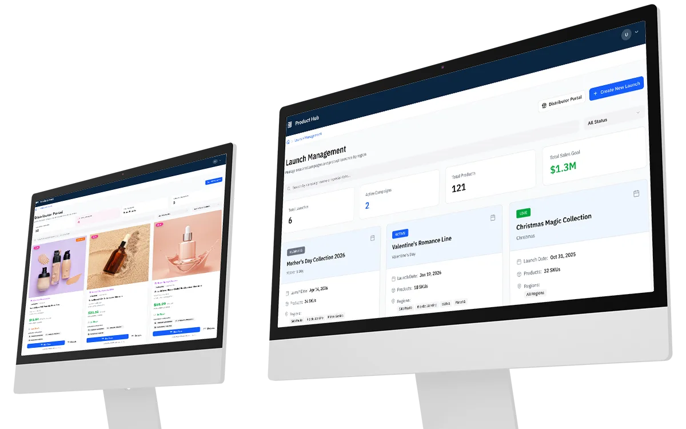
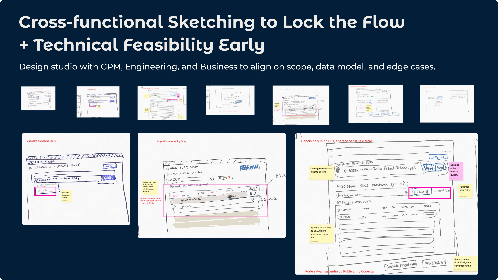
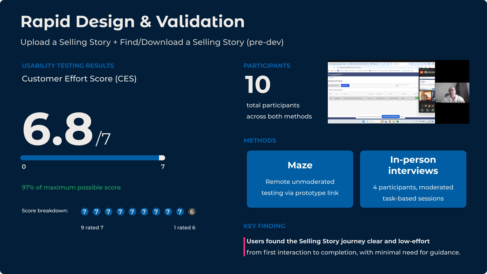
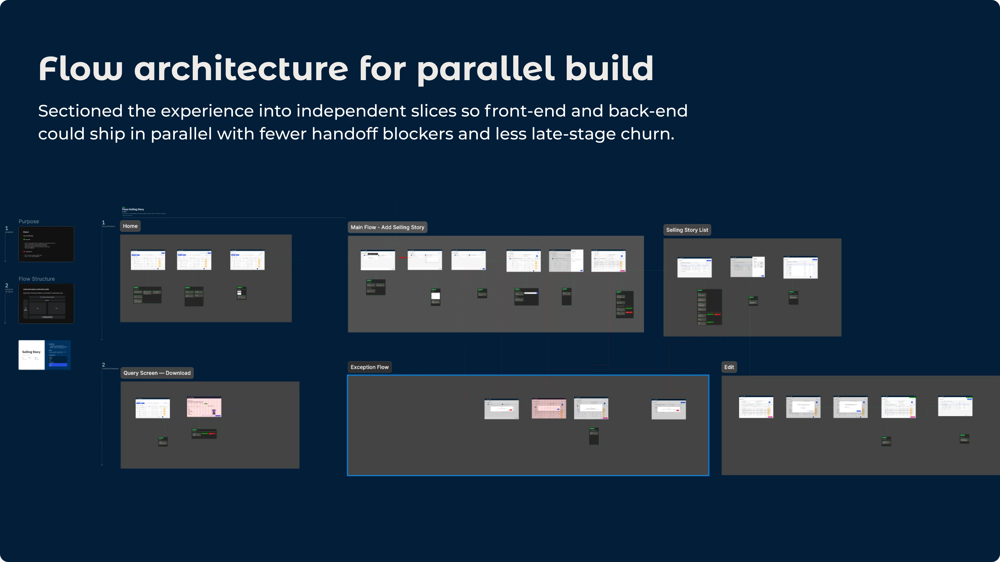
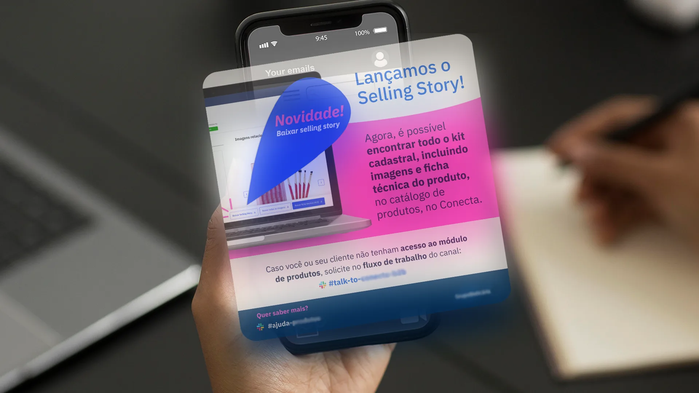
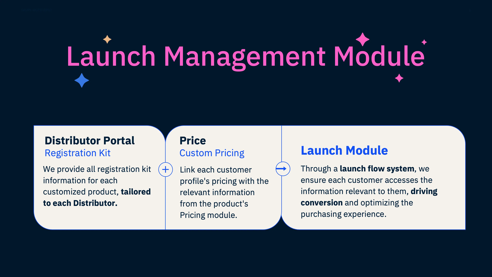

Designed the missing feature no team had built, shipped it ahead of schedule, and mapped the next opportunity before the cycle closed.
The brief I was handed: there wasn't one.
The brief I shipped: the missing feature, plus the next cycle's opportunity, scoped.
100%
OKR completion for launch cycle 4/24
2×
user growth in six months post-launch
20×
more catalog downloads in six months post-launch

Problem
Product Catalogue helps resellers find and promote products, enabling them to showcase independently. But there was a critical gap: the Selling Story journey. Without it, resellers couldn't complete the Catalogue Registration Kit, blocking the entire OKR.
There was no PM at the start. The flow had never been designed, and nobody had connected the dots between what the business needed and what the team could build.
Solution
I identified the gap and stepped into the space left by the missing PM. Working directly with the GPM and key stakeholders, I mapped the requirements and designed the Selling Story journey from scratch alongside the engineering team: 2 frontend developers, 1 backend developer, and a tech lead. A new PM joined later in the process and we shipped it together.
My Approach
With no PM in place, I started by working directly with the GPM and stakeholders to understand business requirements and constraints before any screen design. That alignment session became the foundation for the entire flow. Once the logic was agreed, I brought it to the engineering team to stress-test technical feasibility and lock the structure before moving to high-fidelity.

Early alignment: sketching the flow structure with the team before touching Figma
Design Decisions Under Constraint
The Q4 deadline was fixed. To make it achievable, I made a deliberate decision early: wherever possible, use components the engineering team already knew. The Product Catalogue already had tables and filters that worked well. Rather than designing new patterns, I mapped the Selling Story flow onto those existing components and iterated closely with engineers throughout. The team didn't need to learn anything new: they just needed to apply what was already there to a new context. That decision reduced handoff friction and kept the build on schedule.
Selling Story journey: prototype walkthrough through the full flow
Usability Testing
I tested the Selling Story journey with 10 participants using a mixed-method approach: remote unmoderated sessions via Maze and 4 moderated in-person interviews. The overall CES (Customer Effort Score) came back at 6.8 out of 7, which meant the flow was working. But the in-person sessions gave me something the Maze data couldn't: I could watch where attention went and hear what people said out loud.
One thing came up consistently: users paused on the list page looking for context. They wanted to know who had made a change and when. In a B2B flow where resellers and promoters are working across the same catalogue, that information is how people orient themselves before acting. It's not optional. I added the actor and timestamp to the list view before handoff. A small change, but one that came directly from watching real people use the product, not from assumption.

Flow Architecture
I structured the flow architecture deliberately so frontend and backend could develop in parallel, which was critical for hitting the Q4 deadline. By working closely with the dev team throughout implementation, we eliminated the need for separate design reviews at completion. The flow file became the shared reference for the entire sprint: two frontend developers, one backend developer, the tech lead, and eventually the new PM who joined mid-project.

Complete Selling Story flow: the shared reference that kept frontend, backend, and tech lead aligned throughout the build
Go-to-Market
I built launch communications for internal teams and external distributors. Adoption was part of the brief I set for myself, not just delivery.

Launch communication sent to internal teams and distributors on release day
What I saw coming
While building the Selling Story, I ran parallel research: interviews, system mapping, and direct client conversations to understand where the next real opportunity lived. That work became a full product opportunity deck: problem statement, quantified sizing, data references, and client testimonials gathered specifically for this case. The finding: three areas needed to connect to make the OKR completable at scale: the Product Catalogue Registration Kit, Personalised Pricing, and a structured Launch Module. I sized it as a ~30% GMV upside driven by new product launches and presented it to the GPM and execs as a next-cycle investment opportunity. The image below is a summary slide from that deck.

Summary from the product opportunity deck: three connected areas needed to unlock full OKR impact
The visual exploration below is a conceptual prototype I developed for this portfolio, to show what the module could look like in practice. It was not part of the original presentation.
Conceptual exploration: what the Launch Management Module could look like, created for this portfolio
Results & Impact
100%
OKR delivered early, creating momentum for the next cycle
6.8/7
CES score across 10 usability test participants
20×
more catalog downloads in the six months post-launch
Key Learnings
What I'd do differently
The work landed well but I didn't advocate for it enough while it was still in progress. I'd bring design leadership into the room earlier, not to present finished work, but to build conviction before shipping. The opportunity deck I put together was strong. Getting it in front of the right people sooner would have given it a better chance of becoming the next brief.